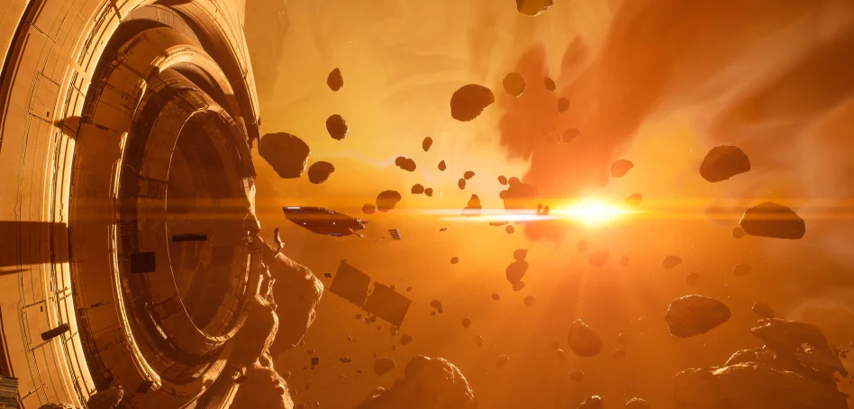

Jag tycker om att spela datorspel på fritiden. Dock efter barnen blir tiden knapp att hinna med. Jag har spelat många olika spel genom åren ända sen barnsben och jag hoppas intresset håller sig starkt många år till.
Nedan rankar jag mina tre favorit spel samt länkar till deras steam-sidor så du också kan kolla in dem!
ASKA är ett spel jag har ungefär 300h i och kan det mycket väl. Det är ett spel som fortfarande utvecklas och är i så kallat "early-access".
Homeworld 3 har jag kört klart två gånger. Mycket trevligt spel.
Valheim då? Jo även där har jag flera hundra timmar spelat även det är ett "early access"
Spelranking:
| Placering: | Namn: | Utvecklare: | Genre: | Steam-länk: | Youtube-länk: |
|---|---|---|---|---|---|
| 1 | ASKA | Sand Sailor Studio | Survival | Steam-länk | XX |
| 2 | Homeworld 3 | Blackbird Interactive | Space Simulation | Steam-länk | XX |
| 3 | Valheim | Iron Gate AB | Survival | Steam-länk | XX |
Bild från Valheim

Bild från Homeworld 3
